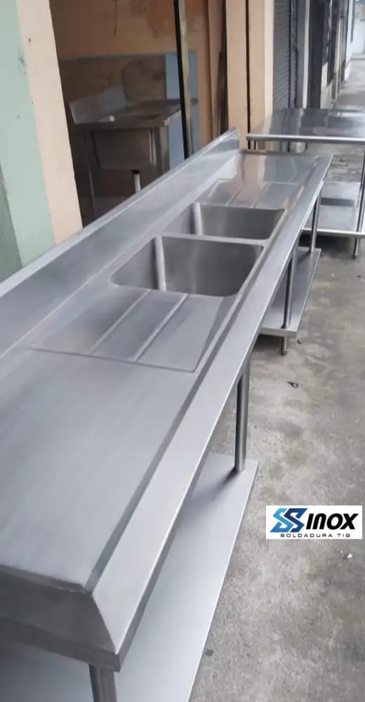
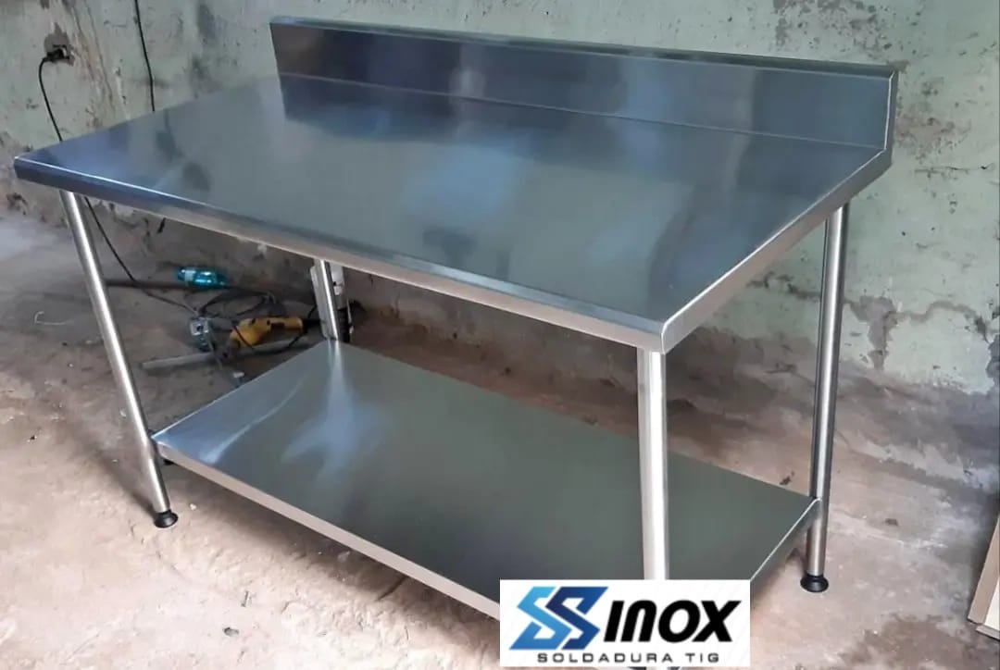
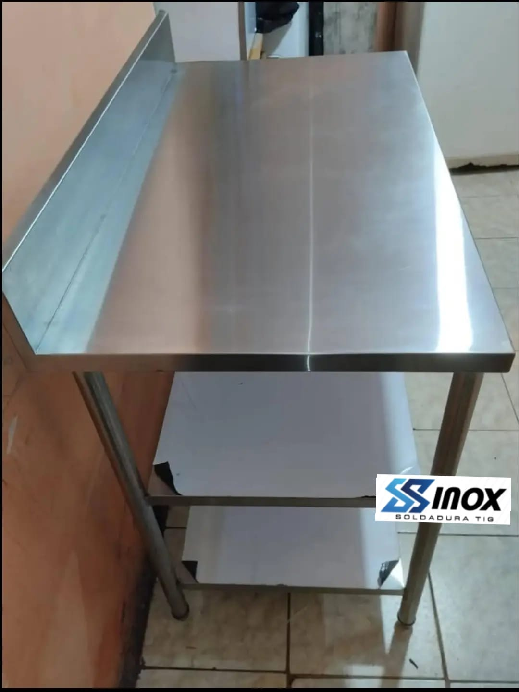
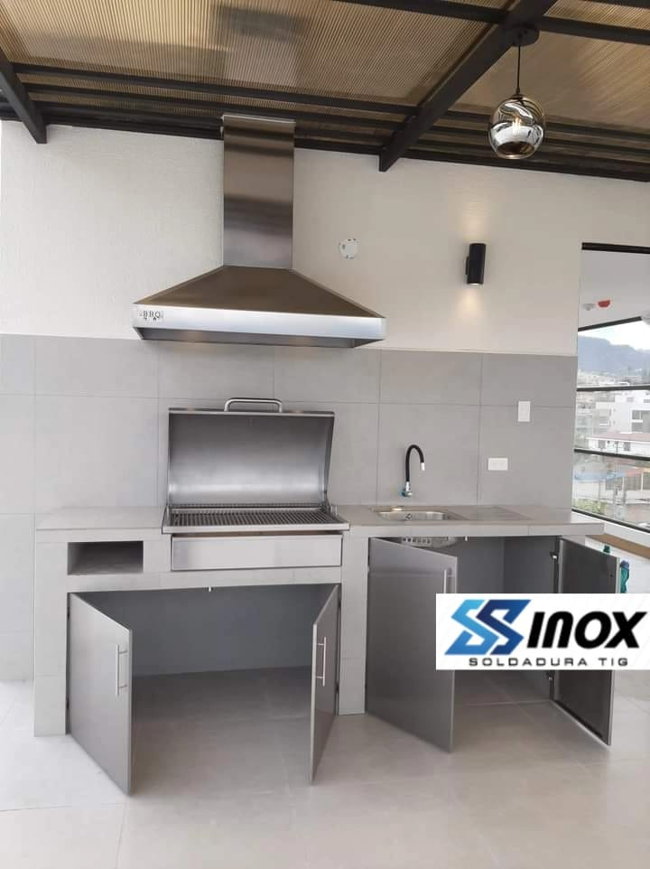

Fregadero Industrial Doble Poza
Lavaplatos sanitario en acero inoxidable con escurridores acanalados, salpicadero y entrepaño inferior.
Fabricamos mobiliario sanitario, equipamiento gastronómico e industrial, estructuras, cubiertas y trabajos a medida con acabados de alta durabilidad.
Soluciones integrales en acero inoxidable y hierro para hogares, comercios e industrias.
Fabricación de mesas de trabajo, fregaderos industriales, campanas extractoras y mobiliario grado alimenticio con uniones sanitarias pulidas.
Diseño, fabricación y montaje de galpones, techados, cubiertas metálicas, altillos y refuerzos estructurales de alta resistencia.
Puertas de seguridad, portones corredizos o batientes, rejas, pasamanos, estanterías industriales y áreas BBQ personalizadas.
Servicio técnico de soldadura en taller o en sitio para maquinaria, líneas de producción, tanques y estructuras comerciales.
Fabricación 100% real en nuestro taller en Santo Domingo.

Lavaplatos sanitario en acero inoxidable con escurridores acanalados, salpicadero y entrepaño inferior.

Mesón reforzado en acero inoxidable con respaldo posterior y repisa inferior para cocinas o plantas procesadoras.

Acabado en soldadura TIG pulida ideal para preparación de alimentos, laboratorios y clínicas.

Equipamiento residencial a medida en acero inoxidable con campana de extracción y mobiliario integrado.
Trabajamos con restaurantes, hoteles, agroindustrias, constructoras y comercios en Santo Domingo de los Tsáchilas y sus alrededores.
Completa los datos y te atenderemos de inmediato por WhatsApp.